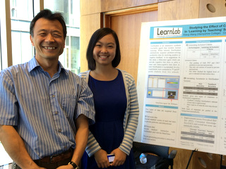
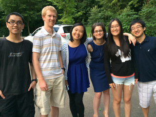
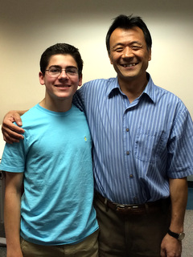

|  |
I have two forms of contribution to teaching: Mentoring and Course Instructions
I am always interested in working with motivated students at any level, at any time. Anything of your interest that is related to any of my projects (which ensures that I can be of your help) would be fine. If you are interested, send me your CV along with a brief project proposal (i.e., something that tells me what you are interested). I would highly recommend you to read project descriptions and related papers to find the best fit. I would highly recommend you to read project descriptions and related papers to find the best fit.
CSC522 Automated Learning and Data Analysis (2024 Spring)
CSC554/791 Human-Computer Interaction (2019-2022 Spring; 2022-2023 Fall)
CSC116 Introduction to Computing Java (2019-2021 Fall; 2023 Spring)
MASC351 Problem Solving in Mathematics (2015 Fall)
EDCI689 Programming Usable and Reliable Educational Technology – Theory and Practice (2016 Spring & Fall, 2018 Fall)
EDCI689 Educational Data Mining (2017 Spring)
EDCI644 Curriculum Development (2017 Fall, 2018 Spring)
MHCI Introduction to Programming with Media (2014 & 2015 Summer)
05-430 Programming Usable Interfaces (2011 Fall)
05-571 Undergraduate Project in HCI (2011 Spring, 2012 Spring)
05-832 Cognitive Modeling and Intelligent Tutoring Systems (2010 Fall)